A page to scroll through, to check every stock assessment in the dataset by eye against the official results in the ICES Stock Assessment Graphs database, SAG. The stocks are grouped by expert group. It is run against the live databases each time this site is built.
For each stock there are
- a heading that is a link to the record of the stock assessment in SAG, where it has one;
- labels for the four summary quantities: green where the dataset and SAG are the same in every year, red where they are not, with the number of years that differ and, if the whole series is out, the median over the years of the dataset value divided by the SAG value, and grey where the quantity could not be compared. A year is the same if the two values are within 2.5% of each other, or within the rounding of the value in SAG;
- dots showing which data are present, for the observed data and for the model estimates: a filled dot where the dataset has values, a ring where it has none;
- plots of the four quantities by year, with the dataset as lines, green for the model estimates and orange for the observed data, and SAG as points. Where the two lines are the same only the green one shows. A panel is tinted red where the dataset and SAG differ. Where SAG has no catches, its landings and discards are added together and shown instead, or its landings alone if it has no discards.
How the summary is calculated, and the usual reasons for a difference, are in Comparing the dataset with SAG.
Code
library(FLStockpile)
library(FLCore)
library(icesSAG)
library(icesSD)
library(ggplot2)
options(FLStockpile.url = "https://github.com/neilcampbelll/FLstockpile/releases/latest/download")
quantities <- c("SSB", "F", "recruitment", "catches")
slots <- c(
"catch", "catch.n", "catch.wt", "landings", "landings.n", "landings.wt",
"discards", "discards.n", "discards.wt", "stock", "stock.n", "stock.wt",
"m", "mat", "harvest", "harvest.spwn", "m.spwn"
)
colours <- c(observed = "#d95f02", estimated = "#1b9e77")Code
# the stock assessments, with the species of each from the stock database
stocks <- stockpile_stocks()
species <- lapply(unique(stocks$assessment_year), function(year) {
sd <- getSD(year = year)
data.frame(stock_code = sd$StockKeyLabel, assessment_year = year, species = sd$SpeciesCommonName)
})
stocks <- merge(stocks, do.call(rbind, species), all.x = TRUE)
stocks <- stocks[order(stocks$expert_group, stocks$stock_code, stocks$assessment_year), ]
stocks$assessment <- paste0(stocks$stock_code, " (", stocks$assessment_year, ")")
# the heading of each stock assessment, a link to its record in SAG
stocks$heading <- ifelse(
is.na(stocks$assessment_key),
stocks$assessment,
paste0("[", stocks$assessment, "](https://standardgraphs.ices.dk/ViewCharts.aspx?key=", stocks$assessment_key, ")")
)
# The summary of a stock assessment in the dataset: SSB, F, recruitment and
# catches, from the model estimates and from the observed data.
#
# Returns a data frame with one row per type, quantity and year.
dataset_summary <- function(stock) {
types <- names(colours)[c(stock$observed, stock$estimated)]
rows <- lapply(types, function(type) {
object <- stockpile_flstock(stock$stock_code, stock$assessment_year, type = type)
found <- list(SSB = ssb(object), F = fbar(object), recruitment = rec(object), catches = catch(object))
rows <- lapply(names(found), function(quantity) {
values <- as.data.frame(found[[quantity]])
data.frame(type = type, quantity = quantity, year = values$year, dataset = values$data)
})
rows <- do.call(rbind, rows)
# with no stock numbers the SSB is calculated as zero, when it is not known
no_numbers <- dimnames(stock.n(object))$year[apply(is.na(stock.n(object)), 2, all)]
rows[!(rows$quantity == "SSB" & rows$year %in% no_numbers), ]
})
rows <- do.call(rbind, rows)
rows$quantity <- factor(rows$quantity, quantities)
rows[!is.na(rows$dataset), ]
}
# The summary of a stock assessment in SAG, in the same layout.
sag_summary <- function(stock) {
sag <- getSAG(stock$stock_code, stock$assessment_year)
# SAG can have more than one assessment of a stock in a year
sag <- sag[sag$AssessmentKey == stock$assessment_key, ]
# where SAG has no catches, the landings and discards are used, or the
# landings alone if there are no discards
sag$catches <- ifelse(
!is.na(sag$catches), sag$catches,
ifelse(!is.na(sag$discards), sag$landings + sag$discards, sag$landings)
)
rows <- lapply(quantities, function(quantity) {
data.frame(quantity = quantity, year = sag$Year, sag = sag[[quantity]])
})
do.call(rbind, rows)
}
# The two summaries of every stock, or the reason there are none.
checks <- lapply(seq_len(nrow(stocks)), function(i) {
stock <- stocks[i, ]
if (stock$n_seasons > 1 || stock$n_units > 1 || stock$n_areas > 1) {
return("Not compared: the stock has more than one season, unit or area.")
}
sag <- if (is.na(stock$assessment_key)) NULL else try(sag_summary(stock), silent = TRUE)
if (is.null(sag) || inherits(sag, "try-error") || all(is.na(sag$sag))) {
return("Not compared: the stock assessment was not found in SAG.")
}
lines <- dataset_summary(stock)
# SAG is compared with the estimates of SSB, F and recruitment, and with
# the observed catches if there are any
compared <- ifelse(lines$quantity == "catches" & stock$observed, "observed", "estimated")
both <- merge(lines[lines$type == compared, c("quantity", "year", "dataset")], sag, all = TRUE)
both$quantity <- factor(both$quantity, quantities)
both <- both[!is.na(both$dataset) | !is.na(both$sag), ]
# both sets of lines are kept, for the plots
attr(both, "lines") <- lines
both
})
# Is a value in the dataset the same as the value in SAG?
#
# It is if the two are within 2.5% of each other, or within the rounding of
# SAG: half a unit in the last decimal place that SAG holds for the quantity.
same_as_sag <- function(dataset, sag) {
places <- 0
while (places < 6 && any(abs(sag - round(sag, places)) > 1e-9)) places <- places + 1
abs(dataset / sag - 1) < 0.025 | abs(dataset - sag) <= 0.5 * 10^-places
}
# Is each quantity the same in the dataset and in SAG?
#
# Returns a data frame with one row per quantity: the status, the median of
# the dataset value divided by the SAG value, the number of years compared
# and the number of them that differ.
agreement <- function(check) {
rows <- lapply(quantities, function(quantity) {
rows <- if (is.data.frame(check)) {
check[check$quantity == quantity & !is.na(check$dataset) & !is.na(check$sag) & check$sag != 0, ]
}
same <- if (NROW(rows) > 0) same_as_sag(rows$dataset, rows$sag) else logical()
data.frame(
quantity = factor(quantity, quantities),
status = if (length(same) == 0) "not compared" else if (all(same)) "same" else "different",
ratio = if (length(same) > 0) median(rows$dataset / rows$sag) else NA,
years = length(same),
different = sum(!same)
)
})
do.call(rbind, rows)
}
agreements <- lapply(checks, agreement)Overview
Every stock assessment and quantity at a glance.
Code
overview <- do.call(rbind, lapply(seq_along(agreements), function(i) {
cbind(stocks[i, c("assessment", "expert_group")], agreements[[i]])
}))
status_colours <- c(same = "#a6dba0", different = "#e9695f", "not compared" = "grey92")
ggplot(overview, aes(quantity, assessment, fill = status)) +
geom_tile(colour = "white", linewidth = 1.5) +
facet_grid(expert_group ~ ., scales = "free_y", space = "free_y") +
scale_x_discrete(position = "top") +
scale_y_discrete(limits = rev) +
scale_fill_manual(values = status_colours, breaks = names(status_colours)) +
labs(x = NULL, y = NULL, fill = NULL) +
theme_minimal() +
theme(
legend.position = "bottom",
panel.grid = element_blank(),
strip.text.y = element_text(angle = 0, hjust = 0),
panel.spacing = unit(0.6, "lines")
)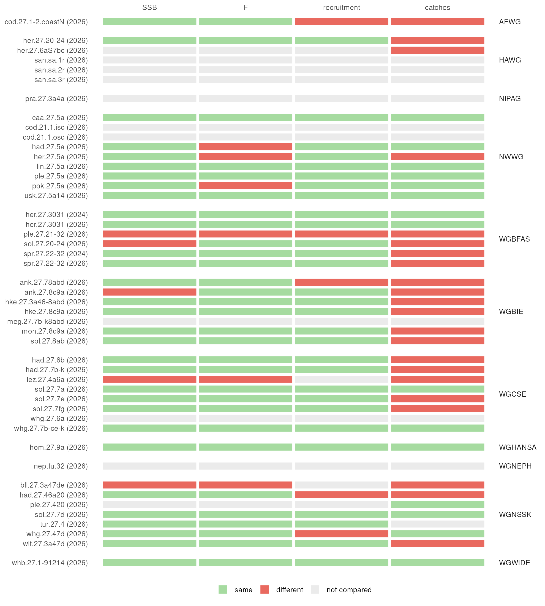
Code
# The labels for a stock, as HTML.
labels_html <- function(agreed) {
# how many years differ, and by how much if the whole series is out
text <- ifelse(
agreed$status == "different",
paste0(
agreed$quantity, ": ", agreed$different, " of ", agreed$years, " years",
ifelse(abs(agreed$ratio - 1) < 0.025, "", paste0(", ×", signif(agreed$ratio, 3)))
),
as.character(agreed$quantity)
)
class <- c(same = "qc-same", different = "qc-different", "not compared" = "qc-none")[agreed$status]
paste0("<p class=\"qc-labels\">", paste0("<span class=\"", class, "\">", text, "</span>", collapse = " "), "</p>")
}
# The dots for a stock: which slots have values, observed and estimated.
dots_plot <- function(stock) {
values <- stockpile_values(stock$stock_code, stock$assessment_year)
present <- expand.grid(slot = c(slots, "survey index"), type = names(colours))
present$found <- paste(present$slot, present$type) %in%
c(paste(values$slot, values$type), paste(values$slot[values$type == "both"], rep(names(colours), each = sum(values$type == "both"))))
present$found[present$slot == "survey index"] <- c(stock$indices > 0, FALSE)
present$slot <- factor(present$slot, c(slots, "survey index"))
present$type <- factor(present$type, rev(names(colours)))
ggplot(present, aes(slot, type)) +
geom_point(data = present[!present$found, ], shape = 1, size = 2.2, colour = "grey80") +
geom_point(aes(colour = type), data = present[present$found, ], size = 3) +
# the two parts of a slot name go on two lines, to fit
scale_x_discrete(position = "top", drop = FALSE, labels = function(slot) gsub("[. ]", "\n", slot)) +
scale_y_discrete(drop = FALSE) +
scale_colour_manual(values = colours, guide = "none") +
labs(x = NULL, y = NULL) +
theme_minimal(base_size = 9) +
theme(
panel.grid = element_blank(),
axis.text.x = element_text(colour = "grey40"),
axis.text.y = element_text(colour = "grey20")
)
}
# The plots for a stock: the four quantities in the dataset and in SAG.
check_plot <- function(check, agreed) {
# the observed lines are drawn first, so the estimates are on top
lines <- attr(check, "lines")
lines <- lines[order(lines$type != "observed"), ]
lines$type <- factor(lines$type, names(colours))
# every quantity gets a panel, with or without values
panels <- data.frame(quantity = factor(quantities, quantities), year = min(check$year), value = 0)
plot <- ggplot(check, aes(year)) +
geom_blank(aes(y = value), data = panels)
if (any(agreed$status == "different")) {
plot <- plot + geom_rect(
data = agreed[agreed$status == "different", ], inherit.aes = FALSE,
xmin = -Inf, xmax = Inf, ymin = -Inf, ymax = Inf, fill = "#e9695f", alpha = 0.12
)
}
plot +
geom_line(aes(y = dataset, colour = type), data = lines, linewidth = 0.7) +
scale_colour_manual(values = colours, guide = "none") +
geom_point(aes(y = sag), data = check[!is.na(check$sag), ], colour = "grey25", size = 0.7) +
facet_wrap(~quantity, nrow = 1, scales = "free_y", drop = FALSE) +
scale_y_continuous(labels = function(y) format(y, big.mark = ",", scientific = FALSE, trim = TRUE)) +
labs(x = NULL, y = NULL) +
theme_minimal(base_size = 9) +
theme(
panel.grid.minor = element_blank(),
strip.text = element_text(hjust = 0, face = "bold")
)
}AFWG
cod.27.1-2.coastN (2026)
Cod
SSB F recruitment: 32 of 32 years, ×1.83 catches: 1 of 32 years

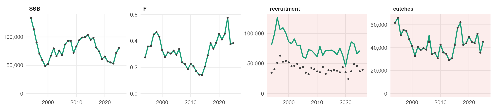
HAWG

san.sa.1r (2026)
Sandeel
SSB F recruitment catches

Not compared: the stock has more than one season, unit or area.
san.sa.2r (2026)
Sandeel
SSB F recruitment catches

Not compared: the stock has more than one season, unit or area.
san.sa.3r (2026)
Sandeel
SSB F recruitment catches
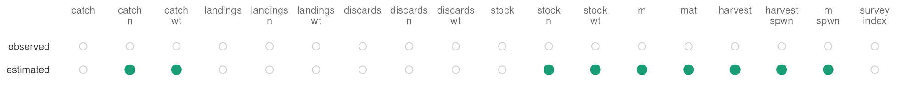
Not compared: the stock has more than one season, unit or area.
NIPAG
pra.27.3a4a (2026)
Northern shrimp
SSB F recruitment catches

Not compared: the stock has more than one season, unit or area.
NWWG


her.27.5a (2026)
Herring
SSB F: 45 of 46 years, ×1.2 recruitment catches: 4 of 46 years
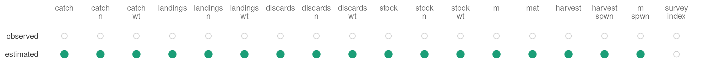


WGBFAS


ple.27.21-32 (2026)
Plaice
SSB: 5 of 24 years F: 8 of 24 years recruitment: 9 of 24 years catches: 23 of 23 years, ×1.31

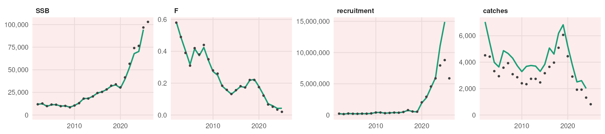


WGBIE
ank.27.78abd (2026)
Black-bellied anglerfish
SSB F recruitment: 1 of 40 years catches: 40 of 40 years, ×1.19


ank.27.8c9a (2026)
Black-bellied anglerfish
SSB: 47 of 47 years, ×1.61 F recruitment catches: 12 of 46 years
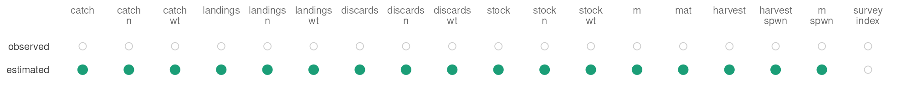
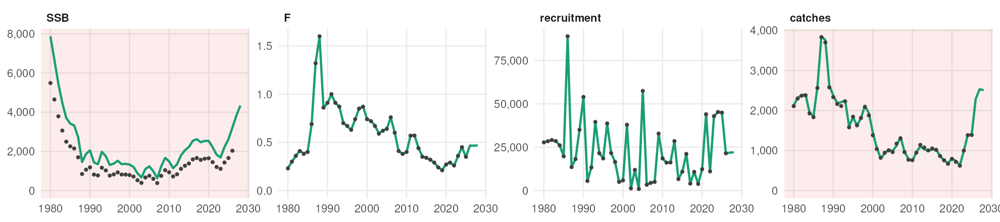


WGCSE


lez.27.4a6a (2026)
Megrim
SSB: 55 of 55 years, ×36400 F: 54 of 54 years, ×0.169 recruitment catches: 12 of 54 years

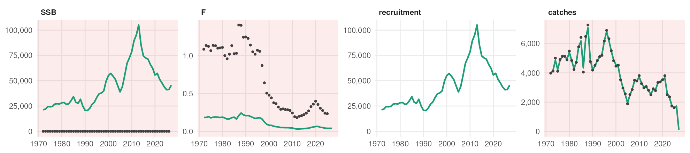

sol.27.7fg (2026)
Sole
SSB F recruitment catches: 30 of 55 years, ×0.967
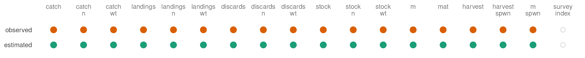
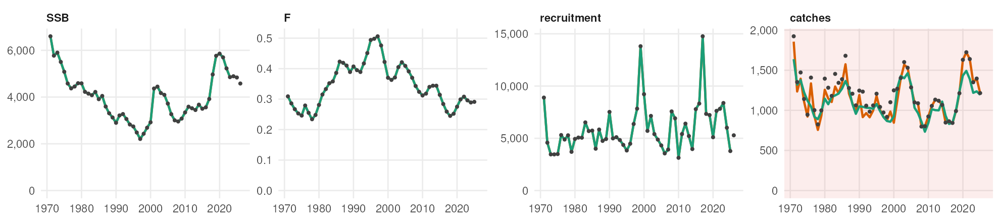


WGNSSK
bll.27.3a47de (2026)
Brill
SSB: 77 of 77 years, ×6160 F: 76 of 76 years, ×0.336 recruitment catches: 31 of 76 years

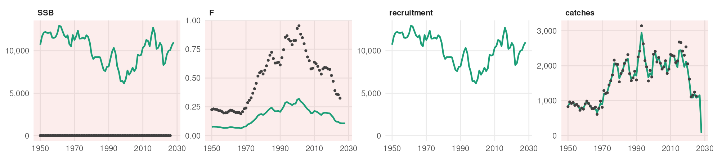